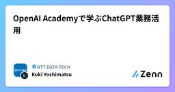
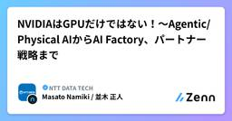

NTT DATA TECHのフィード
https://zenn.dev/p/nttdata_tech
NTT DATA公式アカウントです。 技術を愛するNTT DATAの技術者が、気軽に楽しく発信していきます。 当社のサービスなどについてのお問い合わせは、 お問い合わせフォーム https://nttdata.com/jp/ja/contact-us/ へお願いします。
フィード

OpenAI Academyで学ぶChatGPT業務活用
NTT DATA TECHのフィード
はじめに私はこれまで、ChatGPTを文書の下書きや情報整理、分からないことを調べる際に利用してきました。非常に便利で、今では分からないことがあると、検索するより先にChatGPTを開いています。もはや相談相手というより、反射に近いかもしれません。一方で、同じような指示を出しても期待した結果にならないことや、生成された内容のどこを重点的に確認すべきか分からないこともありました。議事録作成のように繰り返し行う業務でも、どの情報を渡し、どの点を人が確認すべきかまでは明確に分かっていないまま使っていました。そこで、OpenAI Academyの「AI Foundations」「Ap...
1日前

AgentCore Memoryのflexible namespace variablesを実測 — 渡し忘れをNull条件で即時エラー化
NTT DATA TECHのフィード
1. はじめにエージェントに長期記憶を持たせるとき、記憶をどの単位で分けるかは設計の入口になります。1つのエージェントを複数の組織やテナントで共有するなら、「A社の会話から抽出した事実がB社の応答に混ざらない」ことを仕組みとして保証したいところです。Amazon Bedrock AgentCore Memory は、長期記憶のレコードを namespace という階層パスで整理します。namespace は memory strategy ごとにテンプレートとして定義し、{actorId} のような変数を埋め込めます。ただし従来使えた変数は {actorId} / {sessio...
2日前

SageMaker Feature StoreのBatchWriteRecordを実測 — 呼び出し25分の1で5.7倍高速
NTT DATA TECHのフィード
1. はじめにAmazon SageMaker Feature Store のオンラインストアへ特徴量を書き込む手段は、長らく PutRecord だけでした。PutRecord は 1回の呼び出しで 1レコード × 1フィーチャーグループ（以下 FG）しか扱えないため、顧客 200人 × FG 2つを更新するだけで 400回の API 呼び出しが必要になります。さらにオンラインストア自体を直接一覧する API がありませんでした。Standard tier ではオフラインストアを Athena で照会する回避策がありますが、リアルタイムの状態ではありません。オフラインストアを持た...
2日前

GitHub Copilot Cloud Agent のローカル版が欲しくて GitLab + Ollama で作ってみた
NTT DATA TECHのフィード
Issue を登録すると、ローカル LLM が内容を読み取って実装を行い、Merge Request までやってくれる。そんな AI 自走環境を GitLab と Ollama で完全ローカル環境としてつくってみました。最近は、GitHub Copilot Cloud Agentのように、Issue を渡すだけで AI が実装から Pull Request の作成まで進めてくれる開発体験が登場しています。似たようなことをローカルで再現できないか、というのが思いついたきっかけです。https://docs.github.com/en/copilot/concepts/agents/cl...
2日前

NVIDIAはGPUだけではない！～Agentic/Physical AIからAI Factory、パートナー戦略まで
NTT DATA TECHのフィード
はじめに近年、生成AIやLLM（大規模言語モデル）の急速な普及を経て、テクノロジーの潮流は単なる「テキスト対話」から、自律的に判断して行動する「Agentic AI（エージェント型AI）」や、リアルな物理環境と連動する「Physical AI（物理AI）」へと決定的な進化を遂げています。NVIDIAと聞くと「高性能なGPUを供給するハードウェアベンダー」というイメージを持ちがちです。しかし、NVIDIAの研修（正確には研修を受けるための事前課題）を受けてみると、その真価はGPU単体だけではなく、GPUを取り巻くメモリやネットワークを含むハードウェア、GPUを最も有効に利用できる...
6日前

【AWS】Aurora MySQLのメトリクスを読み解く ― 第1回 BufferCacheHitRatioとMySQLキャッシュヒット率
NTT DATA TECHのフィード
1. はじめにAmazon Web Services（以下、AWS）におけるデータベースとして代表的なものにAmazon Auroraが挙げられます。AWSで商用環境を構築する際にデータベースを用意する場面でも、有力な選択肢となっています。このAmazon Auroraについて、インターフェースはMySQLやPostgreSQLとの互換性があるものの、中身は分散型ストレージアーキテクチャとなっており、サーバ上で自前でMySQLやPostgreSQLを稼働させる場合と比較して裏側の仕組みが全く異なります。Auroraを利用している中で、CloudWatchのAurora関連のメト...
8日前
Snowflake CoCoでdbtモデル生成を試す：自然言語・設計情報・実装ルールで何が変わるか
NTT DATA TECHのフィード
株式会社NTTデータの久我です。Snowflake Summit 2026では、開発者向けのAIコーディングエージェントである Snowflake CoCo のアップデートが紹介されました。CoCoは、従来Cortex Codeと呼ばれていた開発者向けAIコーディングエージェントで、dbtやデータパイプライン開発などを支援するものとして位置付けられています。CoCoの登場により、単にSQLを補完するためだけに生成AIを用いるのではなく、自然言語で処理の意図を伝えることで、データパイプラインやdbtモデルを生成できる世界が見えてきました。一方で、実務で使うには「自然言語でどこまで伝...
8日前
攻撃者の視点で情報セキュリティ脅威への理解【第三弾：システム脆弱性の特定～悪用】
NTT DATA TECHのフィード
はじめに前回は本シリーズの第二弾として、ペネトレーションテスト（Penetration Test）の基本概念と実施時の注意点を整理したうえで、HTB（Hack The Box）ラボ環境を用いてウェブディレクトリのブルートフォース攻撃を実施し、攻撃者の情報収集手法を確認した。さらに、その結果から防御側の観点で得られる知見をまとめた。まだ読んでいない方は、先にこちらを確認していただきたい。今回は、ペネトレーションテスト実施の続きを解説する。 【要注意】事前の了承を得ないまま勝手にペネトレーションテストを実施することは禁止である。とても重要な内容であるため、上記の文言は今後の記...
9日前
さらばIPVS、Kubernetesのkube-proxyにnftablesがやってくる日
NTT DATA TECHのフィード
Kubernetes 1.35では、kube-proxyの動作モードのうち、IPVSモードが非推奨（deprecated）になりました。https://kubernetes.io/blog/2025/12/17/kubernetes-v1-35-release/#deprecation-of-ipvs-mode-in-kube-proxy本稿では、このIPVSモードの非推奨化を受け、最近のkube-proxyの動作モードについて調査した内容をまとめます。 kube-proxyとはkube-proxyは、Kubernetesのコアとなるコンポーネントの一つです。Kubernet...
12日前
Azure Container Apps Environmentの分け方と、VNet統合・Private Endpointの基本
NTT DATA TECHのフィード
はじめに直近のAIエージェントシステムの構築案件にて、主に基盤の設計から構築に携わっていました。その中でもMicrosoft Learnなどを読むだけでは理解しづらかった点や、実際の設計・構築を通して悩んだこと、学んだことをまとめます。本記事では2つのテーマを扱います。Azure Container Apps Environmentという概念と分け方Azure閉域化の基本 - VNet統合とPrivate Endpoint基本的な内容も含まれますが、あらかじめご了承ください。 想定読者Azureで業務システムを構築している方Microsoft Learnだけ...
12日前
第1回 Oracle Database TAC機能検証（単体SQL編）
NTT DATA TECHのフィード
1. はじめに本シリーズでは、OpenCanvas Type-Oracle Alloy を用いながら、Oracleに限らず各種技術検証の結果をブログ形式で紹介していきます。シリーズ1本目となる今回は、Oracle Database に搭載されている可用性機能 Transparent Application Continuity (TAC) を4回にわたって取り上げます。TAC は Oracle Database 18c で導入された技術で、従来の Application Continuity (AC) が提供していた“リクエスト復元”をさらに強化し、セッション情報の追跡・自動復元...
13日前
PMLEを2年ぶりに更新！Google Cloud認定資格「全冠」維持で見えたAI/MLの進化
NTT DATA TECHのフィード
～Vertex AIからAgent Platformへ。試験を通して理解したGoogle Cloud AI/MLの現在地～ はじめに先日、Google CloudのProfessional Machine Learning Engineer（PMLE）試験に合格し、約2年ぶりに資格を更新しました。これにより、保有するGoogle Cloud認定資格の「全冠」も維持することができました。本記事では、今回の受験を通じて感じた 「Google Cloud認定試験の変化」 に加え、試験勉強を通じて改めて整理できた 「Gemini Enterprise Agent Platform(以...
13日前
Gaia-X Digital Clearing Houseは何ができるのか、どこが新しくなったのか
NTT DATA TECHのフィード
初めに近年、「データスペース」が世界で話題になっています。IPAによれば、データスペースとは「国境や分野の壁を越えた新しい経済空間、社会活動の空間」と定義されています[1]。データスペースについてあまりよく知らない方は、以下の記事をご参照ください。https://zenn.dev/nttdata_tech/articles/268a88d2f75527このようなデータスペースでは、「参加者間の信頼性の確保」が重要になります。欧州では、その信頼性担保を支える仕組みの一つとして「Gaia-X Digital Clearing House（以下GXDCH）」があります。本記事では...
14日前
Agent Skillで品質は上がる？AWS Ops SkillをSkillあり / Skillなしで比較
NTT DATA TECHのフィード
1. はじめにAgent Skillは、AI Agentに「特定の作業をどう進めるか」という手順や判断基準を与える仕組みです。便利そうではありますが、実際にSkillを渡すことで回答品質が上がるのか、不要な場面で誤発火しないのか、安全面の問題を検知できるのかは、できれば感覚ではなく数値で確認したいところです。そこで今回は、AWS Samplesのsample-agent-skill-evalを使い、sample-aws-ops-skills-for-agentsに含まれるenv-discovery Skillを評価しました。検証したのは、次の4点です。静的AuditでSki...
16日前
Knowledge Acquisition Skill：資料追加でLLM Wikiはどう育つ？
NTT DATA TECHのフィード
1. はじめにRAGでは、質問のたびに検索して関連情報を取り出し、その場で回答を組み立てる構成が一般的です。一方、AWS Samplesの sample-knowledge-acquisition-skill は、取得した資料を相互リンク付きのMarkdown Wikiとして蓄積し、後から新しい資料を追加すると既存ページも更新していく LLM Wiki というアプローチを取っています。これは本記事だけの呼び方ではなく、README 自体がこの方式を「LLM Wiki」と呼び、問い合わせごとに知識を再発見するRAGと対比して「persistent, compounding kno...
16日前
Amazon Bedrockで動画の音声解説を自動生成してみた ― Pegasus + Claude + Pollyを検証
NTT DATA TECHのフィード
1. はじめに動画のアクセシビリティを高める方法の1つに、映像中の視覚情報を音声で説明する Audio Description（音声解説） があります。AWS Samplesには、生成AIを利用して動画のAudio Descriptionを自動生成するサンプルとして、以下のリポジトリが公開されています。https://github.com/aws-samples/sample-code-for-automated-audio-description-using-generative-aiこのサンプルでは、動画中の無音区間を検出し、その時間帯の映像を生成AIで解析して説明文を生...
19日前
AWS AI Leagueを自身のAWS環境で試す ─ Community EditionでGame Playとエージェント改善
NTT DATA TECHのフィード
1. はじめにこれまで、AWS AI League Community Editionについて、以下の記事で全体像とデプロイ方法を紹介しました。AWS AI Leagueを自身のAWS環境で試す ─ Community Editionの全体像AWS AI Leagueを自身のAWS環境で試す ─ Community Editionのデプロイ前回の記事では、Community Editionを自身のAWSアカウントへデプロイし、ブラウザからログインできるところまで確認しました。今回は、実際に Game Play を実行してみます。Community Editionでは、用...
20日前
AWS Solution SkillsをClaude CodeとKiroで比較：同じSonnet4.5でも結果は変わる？
NTT DATA TECHのフィード
1. はじめにAWS Samples の sample-aws-solutions-skills を試してみました。このリポジトリは、AWSのソリューションパターンを AI Coding Agent から利用するための Skill をまとめたものです。特徴的なのは、Kiro・Claude Code・Codex 向けに同じ SKILL.md を配布する構成になっている点です。そこで気になったのが、次の点でした。同じSkill、同じ要件、同じモデルを使っても、AI Coding Agentが違えば成果物は変わるのか？今回は strands-agentcore-multi-a...
21日前
Amazon Bedrock AgentCore GatewayのBudget制御を境界値・並列実行で検証する
NTT DATA TECHのフィード
1. はじめに前回の記事では、AWS Samplesで公開されている sample-agentcore-gateway-usage-interceptor を利用し、Amazon Bedrock AgentCore Gateway経由でCodexからモデルを呼び出しました。https://zenn.dev/kashiwabaray/articles/796539362435ebその中で、以下の基本的な動作を確認しました。CognitoのJWTを利用したユーザー識別RESPONSE Interceptorによるトークン数・推定コストの記録DynamoDBへのユーザー別利用...
25日前
Amzon Bedrock AgentCore GatewayでCodexの利用量とBudgetを制御する
NTT DATA TECHのフィード
1. はじめに生成AIをコーディングエージェントから利用するケースが増えると、単に「モデルを呼び出せる」だけでなく、誰がどれだけ利用したのか、利用額が一定額を超えたときに止められるのかといったコスト管理も重要になります。Amazon Bedrock AgentCore Gateway には、Gateway を通過するリクエストの前後に独自処理を挟める Interceptor があります。Interceptor には大きく次の2つがあります。REQUEST Interceptor：ターゲットを呼び出す前に処理を実行RESPONSE Interceptor：ターゲットからレス...
1ヶ月前